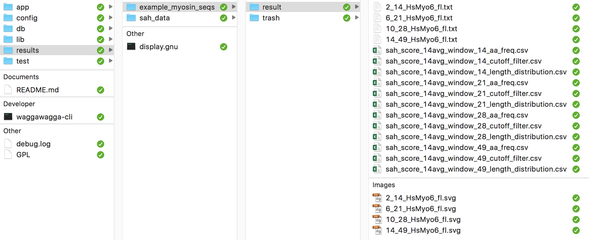
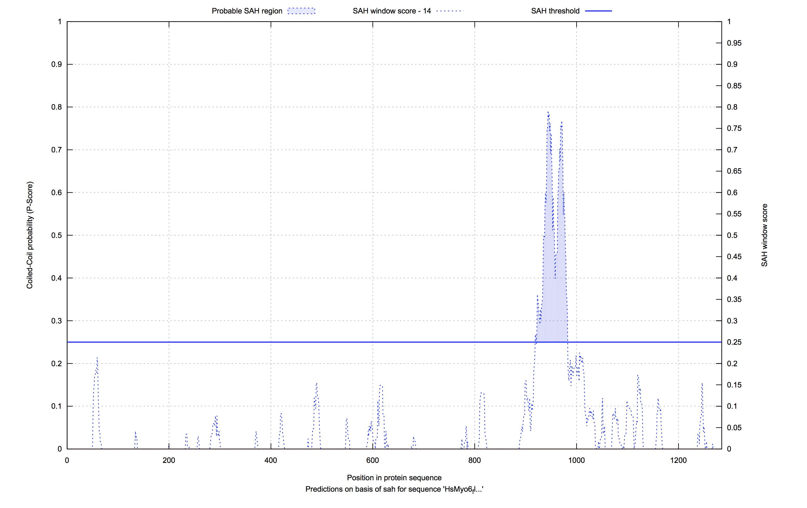
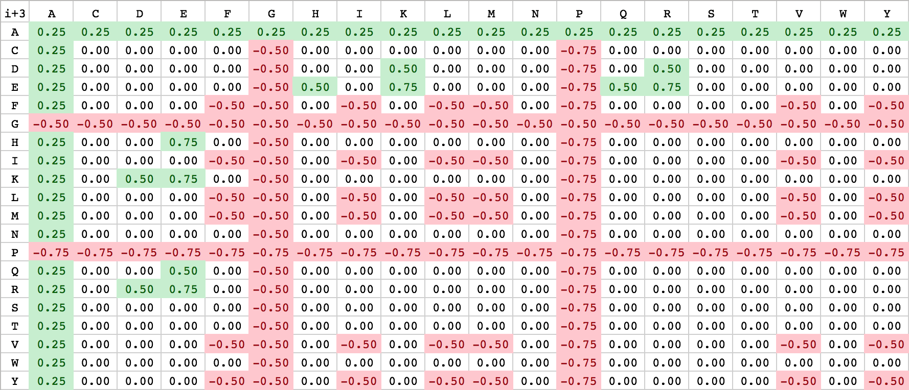
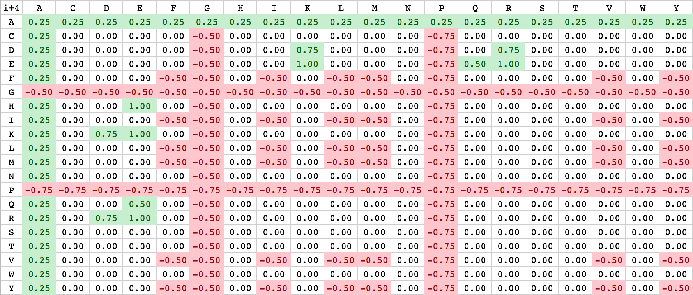

Standalone-Tool »Waggawagga-CLI«¶
If Waggawagga was helpful for your research, please cite:
| [Simm2014] | Simm D., Hatje K. and Kollmar M. (2014) Waggawagga: comparative visualization of coiled-coil predictions and detection of stable single α-helices (SAH domains). Bioinformatics. 31(5):767-769. doi://10.1093/bioinformatics/btu700 |
Quickstart¶
Waggawagga-CLI is the command-line version of the web-application Waggawagga for SAH prediction in proteins. It comes with a ruby environment and a mobile SQLite-database, where the analysed sequence data is stored for direct or later use. To see whether waggawagga-cli is working on your system, run the example data:
➜ ./waggawagga-cli -a example
Import:
- Create session-directory <$HOME>/waggawagga-cli/results/example_myosin_seqs
- FASTA-file: test/example_myosin_seqs.fas
- Found 4 sequences to import (4/4 sequences with len>=49aa)
Progress: 100.00% (37.43 sec.)
- Imported into SQLite-database under identifier 'genome' = "example_myosin_seqs"
Evaluation:
Calculation for window-size: 14
All Found SAHs: 2
Max SAH per seq: 2
- Filter data
Calculation for window-size: 21
[...]
Find your filtered results in
- <$HOME>/waggawagga-cli/results/example_myosin_seqs
Waggawagga-CLI can be run in two modes:
Simple Mode¶
Waggawagga can directly be used with the standard parameter-set only by specifying a FASTA-file:
➜ ./waggawagga-cli <'path/to/your/fastafile.fas'>
Results¶
The result files are stored in the stated session-folder, which is located in the results directory. By default, the folder gets the name of the input file. The analysis starts with predicting SAH-domains for each of the sequences in the file, and subsequently filters the lists of detected SAH-domains. The filtering is done by to two cutoffs: the first specifies the minimum SAH-score for each amino acid to be included in a SAH domain (default: 0.25). The second defines the minimum SAH-domain-score. The SAH-domain score is the maximum of the scores computed as the average of SAH-scores within a window of neighbouring amino acids (default: 14 amino acids). Both cutoffs can be adjusted (see Advanced Mode).
Waggawagga-cli provides three types of files: the analysis of each sequence (txt format), summary tables (CSV format), and (optional) gnuplot SVG images. These files are generated for each of the four different window-sizes (14, 21, 28, 49).
{kind=link}
Prediction files: Sequence analysis, summary tables, and visualizations¶
The sequence analysis files contain the SAH-scores from the start to the end of the sequence. The corresponding optional gnuplot SVG images present the data in a SAH-score by sequence plot. Only the analyses of sequences with SAH-domain scores above the given threshold are stored.
{kind=link}
Waggawagga-cli produces three summary tables:
- The SAH amino acid distribution, which is the frequency of each amino acid found in all detected SAH-domains.
- The SAH length distribution, which is a listing of the detected SAHs ordered by the length of the regions.
- The SAH-domain list, which is a detailed list of all detected SAH-domains, ordered by SAH-domain-score. The table contains information such as the sequence header for referencing, the SAH-domain-score cutoff, the SAH-domain-score, the sequence, length and range of the putative SAH domain, and the SAH-scores for each of the amino acids within the SAH domain. The structure of this file is explained below:
| ID | internalID | Header | SahDomainCutoff | Max14AvgScore | SahDomain | Length | Range | ... |
|---|---|---|---|---|---|---|---|---|
| 1 | 1 | HsMyo10 | 0.50 | 0.770 | KREQ...KKQE | 61 | 815..875 | ... |
| 2 | 21 | HsMyo6 | 0.50 | 0.707 | EAER...IQEE | 61 | 922..982 | ... |
| ... | Scores[preRange(-4/+3)] | Scores[sufRange(-3/+4)] | Scores[Range] |
|---|---|---|---|
| ... | [0.077, 0.113, 0.1012, ...] | [0.172, 0.160, 0.214, ...] | [0.308, 0.391, 0.457, 0.523, ...] |
| ... | [0.214, 0.267, 0.2679, ...] | [0.446, 0.367, 0.351, ...] | [0.272, 0.361, 0.350, 0.338, ...] |
Advanced Mode¶
The SAH prediction and evaluation steps can be separated with the '-a/--action'-argument. Users experienced in database interaction (SQL) can easily design additional analyses. With the 'import' action, a full SAH prediction is started and the data are stored into the database. At this stage, the predictions for all sequences are stored and no cutoff is applied. With the 'evaluate' action, the provided (otherwise default) cutoffs are applied onto the stored dataset and the standard analysis files are generated. The name of the dataset (set of sequences with the same '--id dataset-id') can be set by the user, or, if left blank, will automatically be assigned by the program. With the action 'complete', a full analysis without further user interaction is done. This argument is similar to ommitting the '-a/--action'-argument. Some examples for option usage are given below.
Usage: ➜ ./waggawagga-cli -a <action> [options]
➜ ./waggawagga-cli -a import -i 'dataset-id' -g -f 'path/to/your/fasta.fas'
➜ ./waggawagga-cli -a evaluation -i 'dataset-id'
➜ ./waggawagga-cli -a complete -g -f 'path/to/your/fasta.fas'
➜ ./waggawagga-cli -a example
Specific options:
-a, --action NAME Choose action:
(import, evaluation, complete, example)
-i, --id NAME Identifier for your imported dataset
-f, --file FILE Input sequence-filepath
(protein-sequences, Multiple FASTA format)
-c, --cutoff LIMIT Set SAH-Domain-Score ground-cutoff for the
selection of SAH-Domains (default=0.25)
-g, --gnuplot Activate the generation of gnuplot figures
-v, --verbose Run verbosely
-h, --help Show this message
--version Show version
Waggawagga comes with support for visualizing the SAH-scores with gnuplot as SVG-images. Setting the '-g/--gnuplot' switch on 'import' invokes Waggawagga to compute these plots. This feature works ONLY if gnuplot is pre-installed on your system. Gnuplot is not included in the Waggawagga-CLI package, thus please contact your administrator in case of problems.
Waggawagga-cli uses two parameter files for the SAH-predictions containing the SAH-scores for amino acid interactions in i,i+3 and i,i+4 distances, which are located in the config directory. These files can be customized. For detailed specifications, please see the description in the scoring section below.
Using the SQLite database¶
The database can be used and requested with the simple command-line call, which you can find below. This enters the SQL-shell, where all normal SQL statements are available and further usage commands (.help, .databases, .tables, ..., .exit, .quit)
➜ db: sqlite3 development.sqlite3
SQLite version 3.14.0 2016-07-26 15:17:14
Enter ".help" for usage hints.
sqlite> SELECT * FROM genome_evaluations LIMIT 5;
sqlite> SELECT COUNT(*) FROM genome_evaluations;
sqlite> ...
sqlite> .read db.sql
sqlite> .quit
Or for an direct SQL import of your data use the following instruction:
➜ db: cat db.sql | sqlite3 database.db
If you have deleted a big bunch of entries from a table, you need to add the VACUUM command to flush the data really out of the database. Otherwise it remains in the database not visible, and your command has no effect to the filesize.
sqlite> DELETE FROM genome_evaluations;
sqlite> VACUUM;
Troubleshooting¶
We are using the Traveling-Ruby framework for packaging our Ruby-on-Rails-based Waggawagga-CLI-tool for different plaforms. Therefore we are currently not able to provide packages for others than the following platforms: Linux-x86, Linux-x86 64 Bit and macOS.
If you get errors like this on startup, there is an incompatibility between your system and the chosen package.
➜ ./waggawagga-cli -a example
[...]/lib/ruby/bin/ruby: line 6: [...]/lib/ruby/bin.real/ruby: No such file or directory
[...]/lib/ruby/bin/ruby: Zeile 6: [...]]/lib/ruby/bin.real/ruby: Kann die Binärdatei nicht ausführen: Fehler im Format der Programmdatei
Single-Alpha-Helix Prediction¶
For an understanding of the software Waggawagga, a basic sketch of the SAH-scoring method is drawn in the following section. The SAH prediction is based on a helical net representation of a selected protein region, that is depicted in the form of an residue interaction net of an open-cutted single-alpha-helix. The cut, which flattens the helix, is made along the surface in the direction of the helix axis. A heptad repeat pattern is used as a basis to divide the residues in strict columns, the cut is then made along the f column. On basis of the interacting residues a score is calculated (Single-Alpha-Helix Score), which helps the user to discriminate between coiled-coil regions and single-alpha-helices (SAHs). A high SAH-score (>= 0.25) for the selected protein sequence region is a strong indicator for a single α-helix instead of a predicted coiled-coil.
{kind=link}
In the top-right corner of the helical net view the SAH-score with the number of the strong, medium and weak interactions is displayed. On the left side of the helical net diagram an overview is depicted, which shall give an idea of the position of selected region in the sequence and its surrounding residues.
The helical net has to be read in rows always starting from right to left. Between interacting residues, solid and dashed connections are drawn, which represent strong, medium and weak type of interactions. As you can see from the figure above, the black drawn lines are strong interactions and the dashed grey ones are medium and weak. The classification of the interaction lines results from the rules, aside the helical net. For instance the black rule K(i+4) has the meaning, that between the residue K and the lower-left residue E (i+4 positions) a strong interaction will probably develop. The other rules can be applied accordingly. The used weights for the scoring algorithm can be seen from the table below.
Furthermore network stabilization effects have been included into the calculation of the SAH-score. ...
| Source Residue | Target residue | Interaction | Score | Stabilization | |
|---|---|---|---|---|---|
| E | ⟹ | K/R | i+4 | 1.0 | strong |
| H/K/R | ⟹ | E | i+4 | 1.0 | strong |
| D | ⟹ | K/R | i+4 | 0.75 | medium |
| K/R | ⟹ | D | i+4 | 0.75 | medium |
| E | ⟹ | K/R | i+3 | 0.75 | medium |
| H/K/R | ⟹ | E | i+3 | 0.75 | medium |
| Q | ⟹ | E | i+4; i+3 | 0.5 | weak |
| E | ⟹ | Q | i+4; i+3 | 0.5 | weak |
| E | ⟹ | H | i+3 | 0.5 | weak |
| K/R | ⟹ | D | i+3 | 0.5 | weak |
| D | ⟹ | K/R | i+3 | 0.5 | weak |
| F/I/L/M/V/Y | ⟹ | F/I/L/M/V/Y | i+4; i+3 | -0.5 | destabilizing |
| A | ⟹ | [A-Y] | i+4; i+3 | 0.25 | stabilizing |
| G | ⟹ | [A-Y] | i+4; i+3 | -0.5 | destabilizing |
| P | ⟹ | [A-Y] | i+4; i+3 | -0.75 | destabilizing |
| Network stabilization | i; i+3; i+6 | 0.25 | network | ||
| (oppositely charged residues) | i; i+3; i+7 | 0.25 | network | ||
| i; i+4; i+7 | 0.25 | network | |||
| i; i+4; i+8 | 0.25 | network | |||
As described above, Waggawagga uses a customizable scoring-scheme, that can be influenced by specifying scoring-files containing fixed values. The standard scoring files are located in the config-directory named ‘scoring_matrix_i_3.csv’ and ‘scoring_matrix_i_4.csv’. Due to the internal realization of the scoring, a separate notation for i+3 and i+4 interactions is used. Currently the user has only the option to change the file-content directly or replace the scoring-files with his own. For the realization of an easy-to-note scoring-scheme, amino acid-based scoring matrices have been chosen with alphabetically ordered residues. An illustration of both is listed below:
| Scoring matrix: i+3 (bottom right) | Scoring matrix: i+4 (bottom left) |
|---|---|
|  |  |
{kind=link}
{kind=link}
Some theory about SAHs¶
Helices, that are not buried within globular structures or coiled-coil helix dimers with hydrophobic seams at their interfaces, need networks of charge interactions for stabilization in water. For example, poly-alanine peptides adopt α-helical conformations in water only when they contain oppositely charged residues in distances appropriate to form salt bridges. In the late 1980th and early 1990th many studies have been performed using such poly-alanine models aiming to resolve the conditions for helix formation and stabilization. Different amino acids (mainly Asp, Glu, Lys and Arg, but in some cases also Gln) were introduced in various combinations at varying distances, the corresponding peptides synthesised, their α-helicity experimentally determined by, for example, circular dichroism, and stabilization energies obtained by fitting models to the data.
According to these experiments, helices are stabilized by charged interactions (salt bridges) between residues at i, i+3 and i, i+4 [1, 2] and hydrogen-bonding interactions between polar/charged residues at i, i+3 and i, i+4 [3, 4]. Additional stability can be obtained through networks of oppositely charged residues in i, i+3, i, i+6, or i, i+3, i, i+7, or i, i+4, i, i+7, or i, i+4, i, i+8 distances [5]. In addition to these poly-alanine based peptides, studies have been performed on peptides with complex amino acid distributions [6, 7]. However, each study used different combinations of residues and the experimental conditions (e.g. salt concentrations) were out of the physiological range. Therefore, it is not possible to tabulate all possible combinations and provide comparable stabilization energies. Here, we compared many of the published stabilization energies, tried to set them into relation and define stabilization values for all types of salt bridges and hydrogen-bonding interactions. These stabilization values are summarized for a given sequence window to determine a SAH score. In addition to binary interactions, additional stabilization is added for networks of at least three residues (see above), and destabilizing effects through networks of hydrophobic residues in i, i+3, i, i+6, or i, i+3, i, i+7, or i, i+4, i, i+7, or i, i+4, i, i+8 distances, which would favour coiled-coil formation, are taken into account.
Rights and Restrictions¶
Using Waggawagga by non-academics requires permission. Waggawagga may be obtained upon request and used under a GNU General Public License.